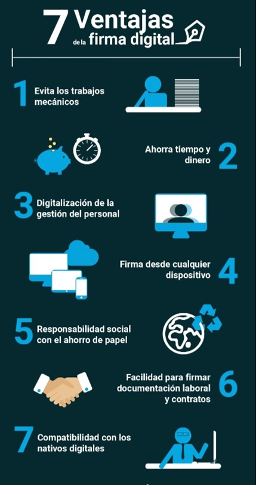

El derecho informático o derecho de la informática es un conjunto de principios y normas que regulan los efectos jurídicos de la relación entre el derecho y la informática. Esta actividad involucra aquello referente a la contratación informática, delitos cometidos mediante su uso, relaciones laborales a que ella da lugar, litigios sobre la propiedad de programas o datos, etcétera.
Ubicamos a la Informática Jurídica, como el ámbito en que aquella se constituye en instrumento orientado a la optimización de la labor de los operadores jurídicos. Es decir, que cuando detectamos este ámbito de relación, en que la informática opera instrumentalmente al servicio del Derecho, estamos frente a una relación similar a la que podemos identificar, insistimos, desde el punto de vista instrumental, entre la informática y cualquier otra de las ciencias.
Informática Jurídica documental
Informática Jurídica de control y gestion
Informática Jurídica de meta documentaria
Podemos describirla como la rama que se ocupa del análisis de la información contenida en documentos jurídicos para la formación de Bancos de Datos Documentales. Trata fundamentalmente de la aplicación de técnicas informáticas a la documentación jurídica en los aspectos referidos al análisis, archivo, y recuperación de información contenida en la legislación, jurisprudencia, doctrin o cualquier otro documento con contenido jurídico relevante. Además de otras áreas comprende la aplicación de técnicas documentales, entendida la documentación como el acto de reunir datos sobre un tema dado y el tratamiento de estos en vistas a su definición. También comprende el análisis documental, o sea el conjunto de ejecuciones realizadas para representar el contenido de un documento, de forma distinta a la original, con el fin de facilitar su consulta o su búsqueda en una etapa posterior al almacenamiento de dicha acumulación de documentos originales o reproducidos, introducidos en la memoria documental de modo que permitan las operaciones de recuperación y localización del contenido informativo Esta rama de la informática jurídica se ocupa de organizar y controlar la información jurídica de documentos, expedientes, libros, etc., mediante la aplicación de programas de administración que permitan crear identificadores y descriptores para la clasificación de dicha información
Este tipo de informática es conocida como de administración y/o control, es utilizada en tribunales, estudios jurídicos, notarias, entre otras, se utiliza sobre todo para llevar el seguimiento de trámites y procesos con el objeto de mantener actualizada la información y llevar un buen control de la misma.
La Informática Jurídica Meta documental constituye aquella rama de la informática jurídica que tiene un mayor significado de complejidad, por cuanto no se agota en la recopilación de textos documentarios, en la realización de documentos jurídicos, o control de asuntos, sino que es aún más profunda en su aplicación de la informática, extendiéndose al campo decisional, educativo, investigativo, entre otras cosas
La política informática se refiere a definir la estrategia con respecto a los principales puntos considerados en el área de tecnología de información, con el fin de proponer acciones y medidas para asegurar la protección de los medios de información y los datos. Es decir, identifica los procedimientos y pautas que deben cumplir todas las personas que acceden y utilizan los recursos informáticos de una organización. Es un modelo de la cultura de la empresa, donde los procedimientos y reglas se basan en la visión de sus empleados sobre su trabajo y la información. Con la política informática una organización tiene un modo de comunicarse con los usuarios, porque mediante esta se instaura un canal formal que estipula la actuación personal con respecto a los servicios y recursos informáticos de la empresa. Su cumplimiento es obligatorio, siendo muy importante para las dependencias de gobierno que forman parte del poder ejecutivo estatal. Tendrá un papel significativo en la dirección y decisiones a tomar, pero no deberá alterar la misión o estrategia empresarial.
Es el conjunto de reglas jurídicas de carácter preventivo y correctivo, derivadas del uso (fundamentalmente inadecuado) de la informática; es decir, que aquí se trata de una reglamentación de puntos específicos:
1.-Si se recurriría a un cuestionamiento de las reglas existentes para determinar si es posible su aplicación análoga frente al problema o si sería necesaria una ampliación en cuanto a su ámbito de cobertura.
2.-Esperar la evolución de la jurisprudencia dada la creciente presentación de casos ante los órganos jurisdiccionales en los que se fijen pautas resolutorias o al menos conciliatorias.
3.- Crear un cuerpo de nuevas reglas integrándolas a ordenamientos ya existentes, o que den lugar a una nueva ley de carácter específico.
Regulació de la información, ya que la información como un bien requiere un tratamiento jurídico en función de su innegable carácter económico
Protección de datos personales, es decir, el atentado a los derechos fundamentales de las personas provocado por el manejo inapropiado de informaciones nominativas
Regulación jurídica de internet, con el favorecimiento o restricción de los portales en internet
Propiedad intelectual e informática, con los temas referentes a protección de los programas de cómputo y regulación de nombres domimio, ambos derivados de las acciones de piratería o ciberocupación
Delitos informáticos, es decir la comisión de actos ilícitos en los que se tengan a las computadoras como instrumentos o fin.
El artículo 6 de la Constitución Política Mexicana establece el derecho de acceso a la información pública. Reconoce que toda persona tiene derecho al libre acceso a información plural y oportuna, así como a buscar, recibir, difundir información e ideas de toda índole por cualquier medio de expresión. Este artículo sienta las bases para la transparencia y el acceso a la información en México, promoviendo la rendición de cuentas y la participación ciudadana en asuntos de interés público. La manifestación de las ideas no será objeto de ninguna inquisición judicial o administrativa, sino en el caso de que ataque a la moral, la vida privada o los derechos de terceros, provoque algún delito, o perturbe el orden público; el derecho de réplica será ejercido en los términos dispuestos por la ley. El derecho a la información será garantizado por el Estado
El Estado garantizará el derecho de acceso a las tecnologías de la información y comunicación, así como a los servicios de radiodifusión y telecomunicaciones, incluido el de banda ancha e internet. Para tales efectos, el Estado establecerá condiciones de competencia efectiva en la prestación de dichos servicios.
El Artículo 8 de la Constitución Política Mexicana establece el derecho a la protección de datos personales. Este artículo establece que todas las personas tienen derecho a la protección de sus datos personales, así como al acceso, rectificación, cancelación y oposición al tratamiento de los mismos, en los términos que establezca la ley. Además En cuanto al artículo 8, relativo al derecho de petición, cabe mencionar que la libre manifestación de las ideas y el derecho a la información pública gubernamental se perfeccionan, mediante la solicitud que se presenta, por escrito, ante la autoridad competente; de tal forma que por su trascendencia resulta necesario conocer el contenido del artículo que nos ocupa.
Igualmente, el artículo establece que la autoridad a la que se haya dirigido el documento deberá acordar (responder) la solicitud del peticionario y deberá darle a conocer, en tiempo breve, si ésta fue procedente; señalando, asimismo, los motivos en los que basa su resolución. En cuanto a la primera condición, cuando se señala que la petición debe hacerse por escrito, ante autoridad competente, significa que ésta debe encontrarse regulada en el margen de facultades que rodean al funcionario público, al que le hemos dirigido nuestro escrito; de tal forma que esté dentro de sus posibilidades ofrecer una solución a nuestros requerimientos.
pPor ello, previo a hacer uso de este derecho, debemos informarnos si el funcionario al que nos vamos a dirigir (que puede ser un secretario de Estado, el jefe de Gobierno, un delegado político o cualquier persona que ejerza un cargo público) cuenta, entre sus atribuciones, con la facultad de darnos una solución, a efectos de que nuestra petición no sea rechazada; situación que únicamente haría que perdiéramos nuestro tiempo y el de la autoridad a la que se la dirigimos, pues se vería obligado a contestarnos que no posee facultades para resolver nuestro problema, turnándonos a la autoridad competente. De la misma forma, se considera importante dejar claro que el documento en el que hagamos valer esta facultad debe dirigirse siempre con absoluto respeto ante la autoridad, aun cuando consideremos vulnerados nuestros derechos; la forma en que nos dirijamos y el sentido que le demos a nuestro escrito pueden hacer la diferencia para que la solicitud que presentemos sea tomada en cuenta.El artículo 7 de la Constitución Política Mexicana establece la libertad de expresión. Reconoce que es libre la manifestación de las ideas, siempre que no se ataque a la moral, los derechos de terceros, provoque algún delito, o perturbe el orden público; el ejercicio de este derecho no será objeto de inquisición judicial o administrativa. Este artículo garantiza el derecho fundamental de los ciudadanos mexicanos a expresar sus ideas y opiniones, siempre y cuando se haga de manera respetuosa y dentro de los límites legales.
La libertad de expresión es el derecho que se tiene a pensar y compartir con otras personas las ideas, reflexiones y opiniones, es decir, el derecho a razonar y dar a conocer lo que pienso y lo que conozco. Este derecho incluye también la libertad de buscar, recibir y difundir ideas, opiniones e informaciones, por cualquier medio y con personas de cualquier otro país. Nadie tiene el derecho de prohibir o limitar la libertad de expresión. (Artículos 6º y 7º constitucionales; y artículo 19 de la Declaración Universal de los Derechos Humanos). El gobierno de cada país está obligado a respetar la libertad de expresión y no interferir con este derecho. El gobierno y la sociedad deben garantizar que los obstáculos que enfrente la libertad de expresión sea removida. La libertad de expresión no sólo protege el derecho a difundir ideas y conocimientos, permite también buscar y recibir información verdadera y de diferentes medios. Esta libertad se traduce en la facultad de leer periódicos y revistas, escuchar la radio, asistir y participar en debates públicos, ver programas de televisión y navegar en el internet. Pero, además, permite acceder a la información en posesión del gobierno, es decir, puedo acceder tanto a los documentos que generan las instituciones públicas, como a la información que está en poder de las y los servidores públicos; esto se conoce como derecho de acceso a la información.
El artículo 16 de la Constitución Política Mexicana establece el derecho a la privacidad. Reconoce que nadie puede ser molestado en su persona, familia, domicilio, papeles o posesiones, sino en virtud de mandamiento escrito de la autoridad competente, que funde y motive la causa legal del procedimiento. Este artículo garantiza la protección de la privacidad y la intimidad de los individuos, estableciendo que cualquier intromisión en estos ámbitos debe estar respaldada por una orden judicial debidamente fundamentada y motivada.
No podrá librarse orden de aprehensión sino por la autoridad judicial sin que preceda denuncia o querella de un hecho determinado que la ley señale como delito, sancionado cuando menos con pena privativa de libertad y existan datos que acrediten el cuerpo del delito y hagan probable la responsabilidad del indiciado. La autoridad que ejecute una orden judicial de aprehensión, deberá poner al inculpado a disposición del juez, sin dilación alguna y bajo su más estricta responsabilidad. La contravención a lo anterior será sancionada por la ley penal.
En los casos de delito flagrante, cualquier persona puede detener al indiciado poniéndolo sin demora a disposición de la autoridad inmediata y ésta, con la misma prontitud, a la del Ministerio Público. Sólo en casos urgentes, cuando se trate de delito grave así calificado por la ley y ante el riesgo fundado de que el indiciado pueda sustraerse a la acción de la justicia, siempre y cuando no se pueda ocurrir ante la autoridad judicial por razón de la hora, lugar o circunstancia, el Ministerio Público podrá, bajo su responsabilidad, ordenar su detención, fundando y expresando los indicios que motiven su proceder. En casos de urgencia o flagrancia, el juez que reciba la consignación del detenido deberá inmediatamente ratificar la detención o decretar la libertad con las reservas de ley. Ningún indiciado podrá ser retenido por el Ministerio Público por más de cuarenta y ocho horas, plazo en que deberá ordenarse su libertad o ponérsele a disposición de la autoridad judicial; este plazo podrá duplicarse en aquellos casos que la ley prevea como delincuencia organizada. Todo abuso a lo anteriormente dispuesto será sancionado por la ley penal. En toda orden de cateo, que sólo la autoridad judicial podrá expedir y que será escrita, se expresará el lugar que ha de inspeccionarse, la persona o personas que hayan de aprehenderse y los objetos que se buscan, a lo que únicamente debe limitarse la diligencia, levantándose al concluirla una acta circunstanciada, en presencia de dos testigos propuestos por el ocupante del lugar cateado o en su ausencia o negativa, por la autoridad que practique la diligencia.
Las comunicaciones privadas son inviolables. La Ley sancionará penalmente cualquier acto que atente contra la libertad y privacía de las mismas. Exclusivamente la autoridad judicial federal, a petición de la autoridad federal que faculte la ley o del titular del Ministerio Público de la entidad federativa correspondiente, podrá autorizar la intervención de cualquier comunicación privada. Para ello, la autoridad competente, por escrito, deberá fundar y motivar las causas legales de la solicitud, expresando además, el tipo de intervención, los sujetos de la misma y su duración. La autoridad judicial federal no podrá otorgar estas autorizaciones cuando se trate de materias de carácter electoral, fiscal, mercantil, civil, laboral o administrativo, ni en el caso de las comunicaciones del detenido con su defensor.
Articulo 285 del código penal federal Se impondrán de un mes a dos años de prisión y multa de diez a cien pesos, al que, sin motivo justificado, sin orden de autoridad competente y fuera de los casos en que la Ley lo permita, se introduzca, furtivamente con engaño, violencia, o sin permiso de la persona autorizada para darlo, a un departamento, vivienda o dependencias de una casa habitada.
Sera castigada con la pena de prisión de cinco a diez años y multa de dieciocho a veinticuatro meses el que lleve a cabo recabe o facilite, cualquier acto de colaboración con las actividades o las finalidades de una banda armada, organización o grupo terrorista.
Cuando una persona participa siendo cómplice ya sea de algún delito,como por ejemplo el robo a mano armada o cuando tu sabes donde se esconde un organización o grupo terrorista y no lo dices eres un cómplice y se puede sancionar.
La criptografía es simplemente la manera de garantizar en Internet el derecho constitucional a la inviolabilidad de la correspondencia. Es la ciencia que estudia los aspectos y contenidos de información en condiciones de secrecía se dividen en:
metodología y técnicas que permite recuperar la información que ha sido previamente tratado por un procedimiento criptográfico sin conocer la técnica utilizada.
transforma la información de tal forma que solo las partes involucradas en la información entiendan el contenido
1. Mantener la confidencialidad
2. Garantizar la autenticidad
Además tiene como objetivo Garantizar la confidencialidad de la comunicación entre emisor y receptor. Proporcionar autenticidad respecto a la información transmitida. Asegurar la integridad del mensaje (es decir, impedir su modificación). A partir de la criptografía es posible identificar amenazas en la seguridad de la información tanto en protocolos y programación de esta como en errores humanos, como olvidar los cambios de contraseñas o compartir información indebida.
Firmar electrónicamente en México es cada vez más común. Hay dos tipos de firma electrónica: la simple y la avanzada. La firma electrónica es un concepto legal que se refiere a la versión digital de la firma manuscrita en documentos físicos. Consiste en un conjunto de datos electrónicos que se adjuntan a un documento digital para asegurar la identidad del firmante y su consentimiento sobre el contenido del documento. La legislación sobre firma electrónica varía según el país, pero por lo general busca regular el uso de estas firmas para garantizar su validez y seguridad en transacciones electrónicas. Efectos legales de la firma electrónica avanzada La firma electrónica avanzada produce los mismos efectos que la firma de puño y letra en papel “Los documentos electrónicos y los mensajes de datos que cuenten con Firma Electrónica Avanzada producirán los mismos efectos que los presentados con firma autógrafa y, en consecuencia, tendrán el mismo valor probatorio que las disposiciones aplicables les otorgan a éstos."
La criptografía asimétrica es un método de cifrado que utiliza un par de claves distintas pero relacionadas matemáticamente: una clave pública y una clave privada. Estas claves se utilizan para cifrar y descifrar la información de manera segura en entornos digitales. La clave pública se comparte abiertamente y se utiliza para cifrar la información que solo puede ser descifrada con la clave privada correspondiente, que solo el destinatario posee. Por lo tanto, cualquier persona puede cifrar datos con la clave pública, pero solo el titular de la clave privada asociada podrá descifrarlos. Este tipo de criptografía es fundamental para la seguridad en internet, ya que permite el intercambio seguro de información en entornos digitales, como por ejemplo en transacciones financieras en línea o en el envío de correos electrónicos cifrados.
Tiene como entrada un conjunto de elementos, que suelen ser cadenas, y los convierte en un rango de salida finito, normalmente cadenas de longitud fija. Es decir, la función actúa como una proyección del conjunto U sobre el conjunto M. Observar que M puede ser un conjunto definido de enteros. En este caso podemos considerar que la longitud es fija si el conjunto es un rango de números de enteros ya que podemos considerar que la longitud fija es la del número con mayor número de cifras. Todos los números se pueden convertir al número especificado de cifras simplemente anteponiendo ceros.
Siempre son del mismo tamaño Los hashes criptográficos arrojados por cada función son todos de una misma longitud. Cuanto más largo sea el código hash , más compleja es la función criptográfica hash y, por lo tanto, mayor su nivel de seguridad.
No es reversible Otra de las características de las funciones hash es que no son reversibles. Esto significa que un usuario puede conocer el hash de un archivo, pero no se pueden conocer los datos a partir del hash. Esta es la razón por la cual estas funciones se usan para almacenar contraseñas.
Los mismos datos dan siempre el mismo hash Otra característica de funciones hash es que es matemáticamente imposible que dos archivos diferentes generen el mismo hash. Por lo tanto, estos códigos son como huellas digitales informáticas, que se utilizan, por ejemplo, en análisis forenses.
Rapidez en el cálculo, las funciones hash suelen ser rápidas de calcular, lo que las hace útiles en una variedad de aplicaciones, incluyendo la verificación de integridad y la indexación rápida de grandes conjuntos de datos.
Unidireccionalidad, es fácil calcular el valor hash a partir de los datos originales, pero es computacionalmente difícil (en teoría) reconstruir los datos originales a partir del valor hash.
Se evitan desplazamientos y colas de las personas involucradas en los procesos de firma. Los documentos firmados pueden recogerse y archivarse en formato digital, sin tener que trasladarse nunca al papel. La distancia deja de ser un problema, por lo que cualquier documento quedará firmado por todas las partes, mucho más rápidamente, y de forma más eficiente que si se firmara a mano. Al quedar archivados en formato digital, su posterior localización también es mucho más fácil y rápida, gracias a las herramientas informáticas de búsqueda, Además Los beneficios de la firma electrónica incluyen la reducción de costos y tiempos asociados con la firma de documentos físicos, la simplificación de procesos administrativos y la mejora de la seguridad y autenticidad de los documentos firmados.
Un certificado digital es un documento electrónico que confirma la identidad de una persona, empresa o entidad en el ámbito digital. Estos certificados son emitidos por entidades de certificación (también conocidas como autoridades de certificación) y contienen información sobre la identidad del titular, como su nombre, dirección de correo electrónico, clave pública y la firma digital de la autoridad emisora. El propósito principal de un certificado digital es asegurar la autenticidad e integridad de la información transmitida a través de internet, así como garantizar la seguridad en transacciones en línea. Los certificados digitales se utilizan para firmar electrónicamente documentos, autenticar la identidad en servicios en línea, cifrar comunicaciones y garantizar la seguridad en transacciones electrónicas. En resumen, un certificado digital actúa como una especie de “credencial electrónica” que respalda la identidad de los usuarios y permite realizar operaciones seguras en el entorno digital. Un certificado digital es tecnología aplicada para certificar la propiedad de un sitio web y para validar transacciones confiables.
1.-Firma Electrónica Avanzada (FIEL). Emitida por el Servicio de Administración Tributaria (SAT) para personas físicas y morales que realizan trámites fiscales en línea.
2.-CertiSign, Ofrece servicios de certificación digital para empresas y particulares, garantizando la seguridad en transacciones electrónicas.
3.-Certimex, Empresa mexicana dedicada a la emisión de certificados digitales para diversos usos, como la firma electrónica avanzada, autenticación en servicios web y cifrado de documentos.
Estas agencias certificadoras juegan un papel fundamental en la seguridad y confianza de las operaciones realizadas en línea en México, asegurando la autenticidad de la identidad digital y la integridad de la información transmitida a través de internet.
Reforma a la Ley Federal de Procedimiento Administrativo el 30 de mayo del 2000. La Reforma a la Ley Federal de Procedimiento Administrativo del 30 de mayo de 2000 tuvo como objetivo principal modernizar y agilizar los procedimientos administrativos en México, buscando mejorar la eficiencia y transparencia en la actuación de las autoridades públicas. Algunos aspectos importantes de esta reforma fueron:
El 28 de septiembre del 2001 se aprueba la publicación del proyecto de Norma Oficial Mexicana NOM-151-SCFI-2002. La aprobación de la publicación del proyecto de Norma Oficial Mexicana NOM-151-SCFI-2002 el 28 de septiembre del 2001 marcó un hito importante en el ámbito de la seguridad y certificación digital en México. Esta norma establece los lineamientos técnicos y administrativos para la emisión, expedición, revocación y administración de certificados digitales. La NOM-151-SCFI-2002 proporciona un marco normativo detallado para regular la emisión y gestión de certificados digitales, con el fin de garantizar la autenticidad, integridad, confidencialidad y no repudio de la información electrónica. Además, establece los requisitos que deben cumplir las entidades que emiten certificados digitales, así como los procedimientos para su validación y revocación. Esta normativa es esencial para asegurar la confianza en las transacciones electrónicas, la firma electrónica avanzada y otros procesos que requieren el uso de certificados digitales en México. Al proporcionar criterios claros y específicos, la NOM-151-SCFI-2002 contribuye a fortalecer la seguridad jurídica y tecnológica en el entorno digital del país.
El 6 de junio del 2006 se reforman y adicionan diversas disposiciones del Código de Comercio. La reforma y adición de diversas disposiciones al Código de Comercio el 6 de junio de 2006 tuvo como objetivo principal actualizar y adecuar la normativa comercial a los avances tecnológicos y a la globalización de los mercados. Algunos puntos relevantes de esta reforma fueron:
Se reforma el Código Fiscal de la Federación, publicado en el DOF el 01 de octubre del 2007. La reforma al Código Fiscal de la Federación publicada en el Diario Oficial de la Federación el 1 de octubre de 2007 introdujo importantes cambios en el marco normativo que regula las obligaciones fiscales en México. Algunos aspectos clave de esta reforma fueron:
Esta reforma al Código Fiscal de la Federación reflejó el compromiso del gobierno mexicano por modernizar y agilizar los procesos fiscales a través del uso de tecnologías digitales, promoviendo la transparencia y facilitando el cumplimiento de las obligaciones tributarias.
El Código Penal Federal es relevante en la medida en que contempla disposiciones específicas relacionadas con los delitos informáticos. En este sentido, el Código Penal Federal establece normas y sanciones penales aplicables a conductas ilícitas vinculadas con el uso indebido de sistemas informáticos y datos electrónicos:
Al que sin autorización modifique, destruya o provoque perdida de información contenida en sistemas o equipos de informática protegidos por algún mecanismo de seguridad, se le impondrán de seis meses a dos años de prisión y de cien a trescientos días multa. Al que sin autorización conozca o copie información contenida en sistemas o equipos de informática protegidos por algún mecanismo de seguridad, se le impondrán de tres meses a un año de prisión y de cincuenta a ciento cincuenta días multa.
Al que estando autorizado para acceder a sistemas y equipos de informática del estado, indebidamente modifique, destruya o provoque perdida de información que contengan, se le impondrán de dos a ocho años de prisión y de trescientos a novecientos días multa. Al que estando autorizado para acceder a sistemas y equipos de informática del estado, indebidamente copie información que contengan, se le impondrán de uno a cuatro años de prisión y de ciento cincuenta a cuatrocientos cincuenta días multa. A quien estando autorizado para acceder a sistemas, equipos o medios de almacenamiento informáticos en materia de seguridad pública, indebidamente obtenga, copie o utilice información que contengan, se le impondrá pena de cuatro a diez años de prisión y multa de quinientos a mil días de salario mínimo general vigente en el distrito federal. Si el responsable es o hubiera sido servidor público en una institución de seguridad pública, se impondrá además, hasta una mitad más dela pena impuesta, destitución e inhabilitación por un plazo igual al de la pena resultante para desempeñarse en otro empleo, puesto, cargo o comisión publica.
Son cualquier información relacionada con una persona física identificada o identificable. Esto incluye nombres, direcciones, números de identificación, información de contacto, datos biométricos, etc.
Se refieren a categorías especiales de datos personales que pueden causar daño significativo o riesgo de discriminación si se procesan de manera indebida. Esto puede incluir información sobre origen étnico o racial, opiniones políticas, creencias religiosas, afiliación sindical, salud física o mental, orientación sexual, antecedentes penales, entre otros.
Un conjunto organizado de datos almacenados de manera sistemática, que pueden ser físicos o digitales, y que están diseñados para ser accesibles y utilizados para diversos fines, como almacenamiento de información, búsqueda, análisis, etc.
Cualquier operación o conjunto de operaciones realizadas sobre datos personales o conjuntos de datos, ya sea por medios automatizados o no, como la recopilación, grabación, organización, estructuración, almacenamiento, adaptación o modificación, recuperación, consulta, uso, divulgación por transmisión, difusión o cualquier otra forma de habilitación de acceso, alineación o combinación, restricción, eliminación o destrucción.
También conocido como perpetrador, atacante o agresor, este es el individuo o grupo que realiza acciones maliciosas o ilegales que resultan en el daño a los datos. Pueden ser hackers, crackers, ciberdelincuentes u otros actores malintencionados que buscan acceder, modificar, destruir o comprometer datos de manera ilegítima o no autorizada.
La víctima en este contexto es el individuo, organización o entidad cuyos datos han sido afectados o comprometidos como resultado de la actividad del sujeto activo. Pueden ser empresas, usuarios individuales, instituciones gubernamentales u otras entidades que sufren las consecuencias negativas del daño a los datos, como la pérdida de información confidencial, interrupción del servicio, robo de identidad, entre otros.
Lectura de información confidencial: Esto implica acceder a datos sensibles o confidenciales sin autorización, permitiendo al perpetrador ver la información que no debería estar disponible para ellos. La lectura de estos datos puede proporcionar al atacante información valiosa, como secretos comerciales, datos financieros, información personal, entre otros.
Sustracción de información confidencial: En este caso, el perpetrador no solo lee la información confidencial, sino que también la toma de su ubicación original sin permiso. Esto puede implicar copiar archivos, descargar datos de una base de datos, robar documentos físicos, entre otros medios.
Copia de información confidencial: El acceso no autorizado también puede implicar hacer copias de la información confidencial para uso posterior. Estas copias pueden ser utilizadas para diversos fines ilícitos, como extorsión, venta en el mercado negro de datos, chantaje, o incluso para llevar a cabo ataques más sofisticados, como el robo de identidad.
los datos de entrada se refieren a la información que un programa recibe para su procesamiento. Esta información puede provenir de múltiples fuentes, como la interacción del usuario a través de un teclado o un formulario web, la lectura de archivos o la comunicación con otros sistemas. Por otro lado, los datos de salida son el resultado del procesamiento de los datos de entrada. Estos resultados pueden ser presentados al usuario final a través de la interfaz del programa, almacenados en una base de datos o archivo, o transmitidos a otro sistema para su posterior uso.
En el contexto específico de las modificaciones de datos de entrada y salida, se refiere a la manipulación y gestión activa de estos datos durante su procesamiento. Esto puede incluir operaciones como validación, transformación, filtrado, cálculos, agregaciones y cualquier otra forma de manipulación necesaria para garantizar que los datos de salida sean precisos, relevantes y útiles en función de los datos de entrada. La modificación de datos de entrada y salida es fundamental en el desarrollo de software para garantizar que los programas puedan manejar eficazmente la información que reciben y producir resultados significativos y precisos para sus usuarios.
Las conductas criminales dirigidas contra la entidad física de un objeto o máquina electrónica con el propósito de dañarla se conocen como vandalismo o sabotaje. Estas conductas pueden implicar daños físicos directos, manipulación maliciosa de componentes o sistemas, o cualquier acción destinada a interrumpir o inutilizar el funcionamiento normal del objeto o máquina. En el contexto de las máquinas electrónicas, como computadoras, servidores, dispositivos electrónicos, etc., el vandalismo o s abotaje puede manifestarse a través de la manipulación física de hardware, la introducción de software malicioso (como virus informáticos), la destrucción intencional de componentes, el robo de información sensible, entre otras acciones perjudiciales.
Estas conductas criminales pueden tener graves consecuencias tanto para individuos como para organizaciones, ya que pueden resultar en pérdida de datos, interrupción de servicios, costos financieros significativos y daño a la reputación. Es importante tomar medidas de seguridad adecuadas para proteger los activos físicos y electrónicos contra este tipo de amenazas, así como estar al tanto de las leyes y regulaciones relacionadas con el vandalismo y sabotaje en cada jurisdicción.
El término hacker trasciende a los expertos relacionados con la informática, para también referirse a cualquier profesional que está en la cúspide de la excelencia en su profesión, ya que en la descripción más pura, un hacker es aquella persona que le apasiona el conocimiento, descubrir o aprender nuevas cosas y entender el funcionamiento de éstas.
Hacker es toda aquella persona con elevados conocimientos informáticos independientemente de la finalidad con que los use. Aquellas personas que tienen fines maliciosos, son llamados Crackers. Éstos últimos son los delincuentes informáticos. Derecho de la sociedad a la información En 1977 se modificó el artículo sexto de la constitución argumentando que el Estado garantizaría tal derecho, así como las ventajas atraídas y sus respectivas desventajas. En esta respectiva modificación determina como base principal de la sociedad la comunicación, así mismo refiere que ambos su mutuamente incluyentes uno del otro por lo que por eso se atañe tal libertad de acceso a la información para la debida comunicación entre las personas físicas y morales. Tal derecho a la información es imprescindible, más ahora que la tecnología parece haber rebasado cualquier parte de nuestra áreas de interés, ésta información no cabe duda que ha despertado la razón del hombre y algunas veces sumiendolo a una crisis moral de gran envergadura.
Un virus informático es un programa que se copia automáticamente y que tiene por objeto alterar el normal funcionamiento de la computadora, sin el permiso o el conocimiento del usuario. Aunque popularmente se incluye al malware dentro delos virus, en el sentido estricto de esta ciencia los virus son programas que se replican y ejecutan por sí mismos. Los virus, habitualmente, reemplazan archivos ejecutables por otros infectados con el código de este. Los virus pueden destruir, de manera intencionada, los datos almacenados en un ordenador, a un que también existen otros más benignos que solo se caracterizan por ser molestos. se clasiifcan en: